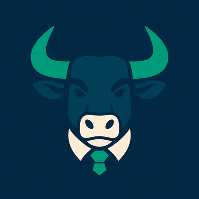

Por onde
começar?
Conte qual tarefa toma seu tempo. Vamos entender o problema juntos.
Encontrar um caminho
ATLAS BULLO Atlas Bull desenvolve automações, análises de dados, sites, catálogos virtuais e integrações para organizar processos e apoiar decisões — com tecnologia e inteligência artificial aplicadas às necessidades do seu negócio.
Vamos conversar sobre sua empresaAo lado de quem
faz a empresa acontecer.
Cinco frentes para transformar necessidades do seu negócio em entregas práticas.
Simplifique rotinas repetitivas: organização de arquivos, atualização de planilhas e preparação de documentos.
Ponto de partida: uma tarefa bem definida, com entrada e resultado que possam ser conferidos.
Conversar sobre automaçãoReúna vendas, despesas e indicadores em relatórios e painéis claros para apoiar suas decisões.
Ponto de partida: dados que sua empresa já possui e os indicadores que você precisa acompanhar.
Conversar sobre dadosApresente sua empresa, serviços e projetos em um site adaptado ao celular, com navegação simples e contato direto.
Ponto de partida: uma apresentação que explique quem você é e o que oferece.
Conversar sobre seu siteOrganize produtos, referências, fotos, cores e tamanhos em um catálogo fácil de consultar.
Ponto de partida: seu acervo de produtos e a forma como seus clientes fazem consultas e pedem orçamentos.
Conversar sobre seu catálogoConecte ferramentas para reduzir a cópia manual de informações entre sistemas.
Ponto de partida: dois sistemas e um fluxo, após conferir os acessos e recursos disponíveis.
Conversar sobre integraçõesConte qual tarefa toma seu tempo. Vamos entender o problema juntos.
Encontrar um caminhoVocê conhece seu negócio. Nós ajudamos a transformar essa experiência em ferramentas para sua rotina.
Vamos conversarExplore três demonstrações com dados fictícios. São exemplos de possibilidades, não resultados de clientes.
Uma apresentação de produtos com referências, categorias e informações fáceis de encontrar.
Exemplo local. Não consulta sistemas, executa IA ou envia pedidos.
Ref. EX-001
R$ 89,00Ref. EX-002
R$ 29,00Ref. EX-003
R$ 49,00Referência, cor e sequência extraídas do nome para organizar o acervo.
Um caminho claro, do primeiro contato à entrega. Você acompanha e aprova as decisões importantes.
Conversamos sobre a rotina, o problema e o resultado desejado.
Apresentamos o escopo, o prazo e o orçamento para aprovação.
Construímos a solução e mostramos uma prévia para você conferir.
Colocamos a solução em uso e explicamos como utilizá-la.
Suporte, manutenção e melhorias conforme o serviço contratado.
Visão de negócio e tecnologia, trabalhando juntas.
O Atlas Bull nasceu para ajudar pequenas e médias empresas a simplificar tarefas, organizar informações e transformar necessidades em soluções digitais.
À frente da marca está Pedro Henrique, Administrador, Engenheiro de Prompts de IA e Analista de Dados. Sua atuação une visão de negócio, aplicação de inteligência artificial e análise de informações para desenvolver soluções alinhadas à realidade de cada empresa.
Começamos entendendo sua empresa para construir uma solução que faça sentido na sua rotina.
Conte o que sua empresa precisa simplificar. O primeiro passo é entender sua rotina.
Escolha um assunto para começar a conversa.
Vamos conversar sobre sua empresaO WhatsApp será aberto para você revisar a mensagem e decidir sobre o envio.
Prefere e-mail?